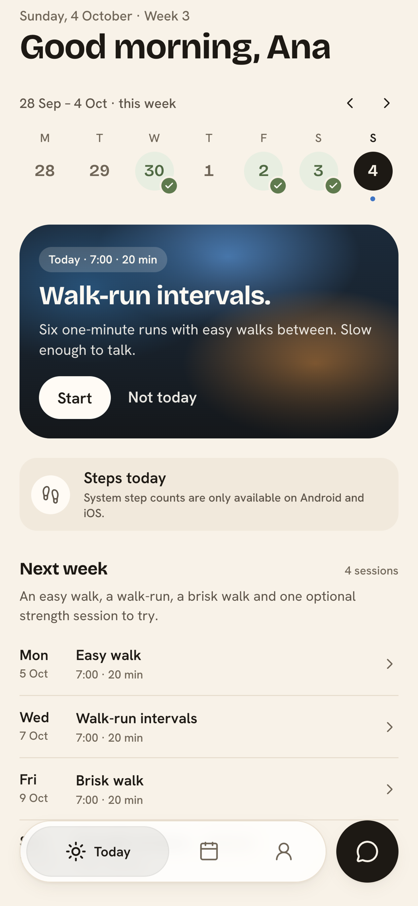
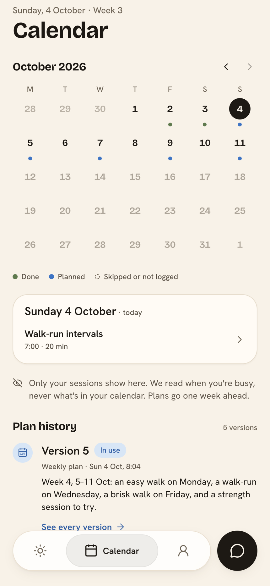
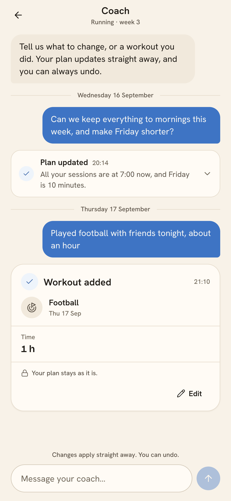
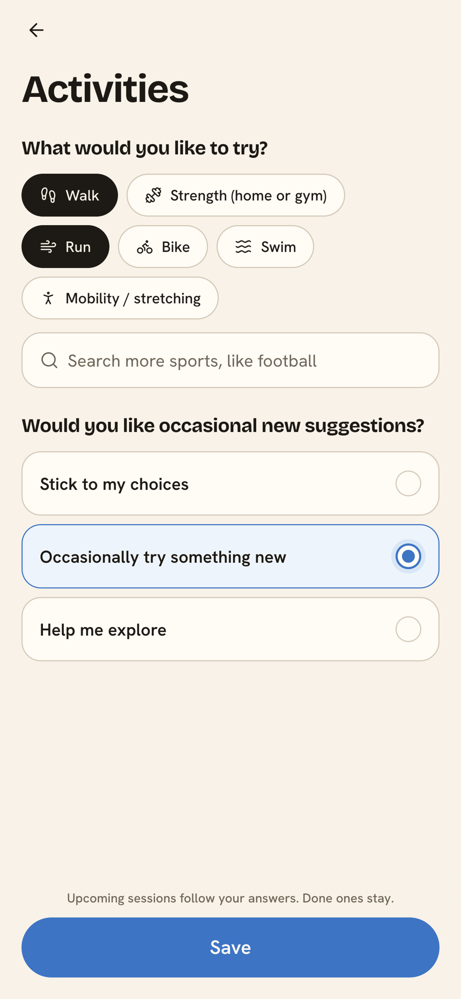

Nigdy nie ćwiczy
tak odpowiedzieli
badani w Polsce.
HackYeah 2026
Aplikacja dla początkujących: tworzy plan aktywności,
planuje go wokół zajętości w kalendarzu i zmienia trening przez czat.
Zacznij od tego, na co masz dziś czas.
Problem
tak odpowiedzieli
badani w Polsce.
ogranicza częstsze
uprawianie sportu (badani w UE).
w trzech badaniach aplikacji
do aktywności fizycznej.
65% (Polska) i 41% (UE): Komisja Europejska, Special Eurobarometer 525: Sport and Physical Activity, 2022. · 54–75%: Kidman i in., J Med Internet Res 2024;26:e56897 — 3 badania aplikacji do aktywności fizycznej.
Dla kogo
Dla początkujących i wracających po przerwie
Chcą ruszać się więcej, ale trudno im zacząć i utrzymać rytm.
Po wielu nieudanych próbach potrzebują prostego planu,
który mieści się w ich codziennym życiu.
Jedna zmiana grafiku burzy cały tydzień.
Ćwiczenia przerastają obecne możliwości.
Trudno wracać do czegoś, co nie sprawia frajdy.
Plan tygodnia + kalendarz
Movo układa sesje wokół zajętości w kalendarzu
i pokazuje tydzień, który da się wykonać.
Punkt startu, liczba dni, długość sesji, miejsce i sprzęt
decydują o ćwiczeniach i dniach odpoczynku.
Movo czyta, kiedy jesteś zajęty — nie co masz zapisane.
Sesja trafia w okno, w którym naprawdę masz czas.
Plan ma wersje: widać, co i kiedy się zmieniło,
a zmianę można cofnąć.


Zrzuty z aplikacji Movo · konto demo
Czat z asystentem treningowym
Jedna wiadomość wystarczy, żeby przesunąć sesje,
skrócić trening albo dopisać aktywność spoza planu.
Jedna wiadomość, konkretna zmiana
„Przenieś wszystko na poranki i skróć piątek” — plan zaktualizowany w kilka sekund.
Trening spoza planu też się liczy
„Grałem w piłkę przez godzinę” — aktywność trafia do historii, a plan zostaje bez zmian.
Widać, co dokładnie się zmieniło
Każda zmiana ma własną kartę i wersję planu, którą można cofnąć.

Zrzut z aplikacji Movo · konto demo
Movo na tle Runna i Hevy
| Funkcja | Movo | Runna | Hevy |
|---|---|---|---|
| Wolny termin w kalendarzu | Czyta twoją zajętość i planuje w wolnym oknie | Sam ustawiasz godzinę i przenosisz trening¹ | Brak połączenia z twoim kalendarzem² |
| Zmiana planu przez czat | Piszesz, co się zmieniło; Movo aktualizuje plan | Zmiany przez ustawienia i gotowe opcje³ | ChatGPT działa poza aplikacją Hevy⁴ |
| Rodzaj aktywności | Różne formy ruchu według twoich preferencji | Bieganie i treningi uzupełniające | Plany treningu siłowego |
Movo znajduje czas na trening i pomaga zmienić plan przez rozmowę.
Wszystko w jednej aplikacji.
¹ Runna: synchronizacja i kalendarz treningów
² Hevy: kalendarz treningów
³ Runna: ustawienia planu i czat wsparcia
⁴ Hevy w ChatGPTŹródła: support.runna.com, hevyapp.com, help.hevyapp.com · stan: 4.10.2026
Odkrywanie aktywności
Nie wiesz jeszcze, co lubisz?
Movo proponuje nowe formy ruchu tylko wtedy,
kiedy sam na to pozwolisz.
Spacer, bieg, siła, rower, pływanie, mobilność
— plus wyszukiwarka innych sportów.
Od „zostań przy moich wyborach”
po „pomóż mi odkrywać”.
Po sesji zaznaczasz, czy wybrałbyś ją ponownie.
Kolejne propozycje biorą to pod uwagę.

Zrzut z aplikacji Movo · konto demo
Co dalej
Movo pomaga wrócić do ruchu,
nawet kiedy tydzień nie idzie
zgodnie z planem.
Apple Health, Health Connect i Garmin: trening loguje się sam, bez wpisywania go po powrocie.
Interfejs i opisy treningów po polsku — dziś aplikacja mówi po angielsku.